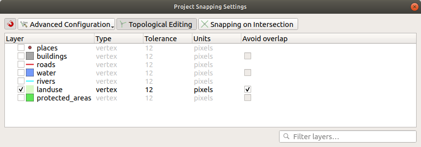
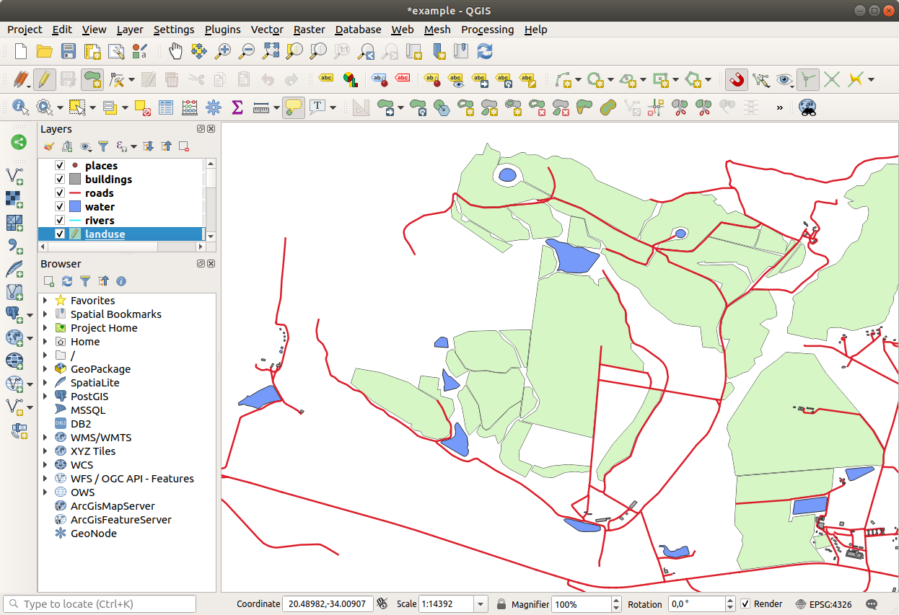
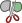

Topology is a useful aspect of vector data layers, because it minimizes errors
such as overlap or gaps.
For example: if two features share a border, and you edit the border using
topology, then you won’t need to edit first one feature, then another, and
carefully line up the borders so that they match. Instead, you can edit their
shared border and both features will change at the same time.
The goal for this lesson: To understand topology using examples.
Snapping makes topological editing easier.
This will allow your mouse cursor to snap to other objects while you
digitize.
To set snapping options:
Navigate to the menu entry
Project ► Snapping Options….
Set up your Snapping options dialog to activate the
landuse layer with Typevertex and tolerance
12 pixels:

Make sure that the box in the Avoid overlap column is
checked.
Leave the dialog.
Select the landuse layer and enter edit mode
()
Check (under View ► Toolbars) that the
Advanced Digitizing toolbar is enabled.
Zoom to this area (enable layers and labels if necessary):

Digitize this new (fictional) area shown in red:
When prompted, give it an OGC_FID of 999, but feel free to
leave the other values unchanged.
If you are careful while digitizing, and allow the cursor to snap to
the vertices of adjoining areas, you’ll notice that there won’t be
any gaps between your new area and the existing adjacent areas.
Note the undo
and redo tools in the
Advanced Digitizing toolbar.
Topology features can sometimes need to be updated.
In our study area, an area has been turned into forest, so the
landuse layer need an update.
We will therefore expand and join some forest features in this
area:
Instead of creating new polygons to join the forest areas, we are
going to use the Vertex Tool to edit and join existing polygons.
Enter edit mode (if it is not active already)
Select the Vertex Tool tool.
Choose an area of forest, select a vertex, and move it to an
adjoining vertex so that the two forest features meet:
Click on the other vertices and snap them into place.
The topologically correct border looks like this:
Go ahead and join a few more areas using the Vertex Tool.
You can also use the Add Polygon Feature
tool to fill the gap between the two forest polygons.
If you have enabled Avoid overlap, you don’t have to add every
single vertex - they will be added automatically if your new
polygon overlaps the existing ones.
If you are using our example data, you should have a forest area
looking something like this:
Don’t worry if you have joined more, less or different areas of
forest.
Continuing on the same layer, we will test the Simplify Feature tool:
Click on it to activate it.
Click on one of the areas which you joined using either the
Vertex Tool or Add Feature tool.
You will see this dialog:
Modify the Tolerance and watch what happens:
This allows you to reduce the number of vertices.
Click OK
The advantage of this tool is that it provides you with a simple and
intuitive interface for generalization.
But notice that the tool ruins topology.
The simplified polygon no longer shares boundaries with its adjacent
polygons, as it should.
So this tool is better suited for stand-alone features.
Before you go on, set the polygon back to its original state by
undoing the last change.
The Add Ring tool allows you to add an interior ring
to a polygon feature (cut a hole in the polygon), as long as the hole
is completely contained within the polygon (touching the boundary is
OK).
For example, if you have digitized the outer boundaries of South
Africa and you need to add a hole for Lesotho, you would use this
tool.
If you experiment with the tool, you may notice that the snapping
options can prevent you from creating a ring inside a polygon.
So you are advised to turn off snapping before cutting a hole.
Disable snapping for the landuse layer using the Enable Snapping button (or use the shortcut s).
Use the Add Ring tool to create a hole in the
middle of a polygon geometry.
Draw a polygon over the target feature, as if you were using the
Add polygon tool.
When you right-click, the hole will be visible.
Remove the hole you just created using the Delete Ring tool.
Click inside the hole to delete it.
Answer
The exact shape doesn’t matter, but you should be getting a hole in the middle
of your feature, like this one:
Undo your edit before continuing with the exercise for the next tool.
The Add Part tool allows you to add a new part to a
feature, that is not directly connected to the main feature.
For example, if you have digitized the boundaries of mainland South
Africa, but you haven’t yet added the Prince Edward Islands, you
would use this tool to create them.
Select the polygon to which you wish to add the part by using the
Select Features by area or single click
tool.
Use the Add Part tool to add an outlying area.
Delete the part you just created using the Delete Part tool.
Note
Click inside the part to delete it.
Answer
First select the Bontebok National Park:
Now add your new part:
Undo your edit before continuing with the exercise for the next tool.
The Split Features tool is similar to the
Reshape Features tool, except that it does not delete
either of the two parts.
Instead, it keeps them both.
We will use the tool to split a corner from a polygon.
First, select the landuse layer and re-enable snapping for it.
Select the Split Features tool and click on
a vertex to begin drawing a line.
Draw the bounding line.
Click a vertex on the “opposite” side of the polygon you wish to
split and right-click to complete the line:
At this point, it may seem as if nothing has happened.
But remember that the landuse layer is rendered without
border lines, so the new division line will not be shown.
Use the Select Features by area or single click tool to select the
part you just split out; the new feature will now be highlighted:
Now we will re-join the feature you just split out to the remaining
part of the polygon:
Experiment with the Merge Selected Features
and Merge Attributes of Selected Features tools.
Note the differences.
Answer
Use the Merge Selected Features tool, making sure to first select
both of the polygons you wish to merge.
Use the feature with the OGC_FID of 1 as the source of your
attributes (click on its entry in the dialog, then click the Take
attributes from selected feature button):
If you’re using a different dataset, it is highly likely that your original
polygon’s OGC_FID will not be 1. Just choose the feature
which has an OGC_FID.
Using the Merge Attributes of Selected Features tool will keep the
geometries distinct, but give them the same attributes.
Topology editing is a powerful tool that allows you to create and modify
objects quickly and easily, while ensuring that they remain topologically
correct.
Now you know how to digitize the shape of the objects easily, but
adding attributes is still a bit of a headache!
Next we will show you how to use forms, making attribute editing
simpler and more effective.
 )
)
 undo
and
undo
and  redo tools in the
Advanced Digitizing toolbar.
redo tools in the
Advanced Digitizing toolbar. Vertex Tool tool.
Vertex Tool tool.

 Add Polygon Feature
tool to fill the gap between the two forest polygons.
If you have enabled Avoid overlap, you don’t have to add every
single vertex - they will be added automatically if your new
polygon overlaps the existing ones.
Add Polygon Feature
tool to fill the gap between the two forest polygons.
If you have enabled Avoid overlap, you don’t have to add every
single vertex - they will be added automatically if your new
polygon overlaps the existing ones.
 Simplify Feature tool:
Simplify Feature tool:
 Add Ring tool allows you to add an interior ring
to a polygon feature (cut a hole in the polygon), as long as the hole
is completely contained within the polygon (touching the boundary is
OK).
For example, if you have digitized the outer boundaries of South
Africa and you need to add a hole for Lesotho, you would use this
tool.
Add Ring tool allows you to add an interior ring
to a polygon feature (cut a hole in the polygon), as long as the hole
is completely contained within the polygon (touching the boundary is
OK).
For example, if you have digitized the outer boundaries of South
Africa and you need to add a hole for Lesotho, you would use this
tool. Enable Snapping button (or use the shortcut s).
Enable Snapping button (or use the shortcut s). Delete Ring tool.
Click inside the hole to delete it.
Delete Ring tool.
Click inside the hole to delete it.
 Add Part tool allows you to add a new part to a
feature, that is not directly connected to the main feature.
For example, if you have digitized the boundaries of mainland South
Africa, but you haven’t yet added the Prince Edward Islands, you
would use this tool to create them.
Add Part tool allows you to add a new part to a
feature, that is not directly connected to the main feature.
For example, if you have digitized the boundaries of mainland South
Africa, but you haven’t yet added the Prince Edward Islands, you
would use this tool to create them. Select Features by area or single click
tool.
Select Features by area or single click
tool. Delete Part tool.
Delete Part tool.
 Reshape Features tool is used to extend a polygon
feature or cut away a part of it (along the boundary).
Reshape Features tool is used to extend a polygon
feature or cut away a part of it (along the boundary).

{kind=link}

 Merge Selected Features
and
Merge Selected Features
and  Merge Attributes of Selected Features tools.
Merge Attributes of Selected Features tools.